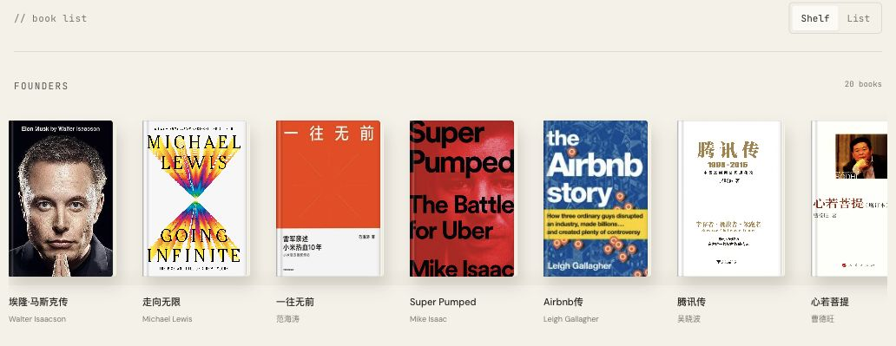
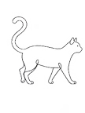

At ZhenFund, each new cohort of our intern program receives a PDF of suggested reading. The books come from recommendations by our full-time team, and colleagues have kept updating the list over the years.
With each cohort, we also hold a reading session. Sometimes we read the same book together. Other times, everyone shares a book they have recently enjoyed.
I liked this tradition and wanted to make it more interactive. I also wanted to open it up to people outside the team who might be curious about what we were reading.
That was the idea behind the ZhenFund Reading Club website.
From a PDF to a Bookshelf
I browsed quite a few reading clubs and book-list websites before settling on a simple style, with a slightly playful, coding-inspired typeface.
The first version was just a list. It worked, but I wanted the pleasure of browsing actual books, letting a cover catch your attention before choosing one.
So I added a bookshelf view, where you can scroll sideways through the covers. The list view stayed, too. Sometimes you want to browse the covers; sometimes you just want to scan a list.


Building in One Conversation
More recently, most of the iteration has happened in Codex.
Earlier, I often had to act as the go-between: ask a model for a change, copy its code into the right file on GitHub, publish it, check the website, and repeat.
Now I can describe an idea, see a preview, ask for adjustments, and have Codex push the updated version once I am happy with it, all within the same conversation.
There is much less moving between tabs and apps. When you are making lots of small changes, that makes a real difference. Trying one more idea feels easier.

And Then There Was the Cat
I also wanted a cat. Books and cats feel like a natural combination to me.
I imagined a little line-drawn cat walking across the page and wandering back. At first, I asked Claude to draw and animate it. The results were quite painful to look at.
I asked friends for advice, including AI creator Hyacinth. I generated an image of the cat with GPT, animated it in Kling, and added it to the website.
Finally, a walking cat.
Making the Idea Clearer
As the models get better, I find myself spending more time figuring out what I want to build, and what I want it to feel like. That makes it all the more important to articulate what’s in my head: the goal, the details I care about, and what a good result looks like.
For now, our reading list has a home beyond the PDF. You can browse the shelves, read people’s thoughts, or leave us a book recommendation.
Luna